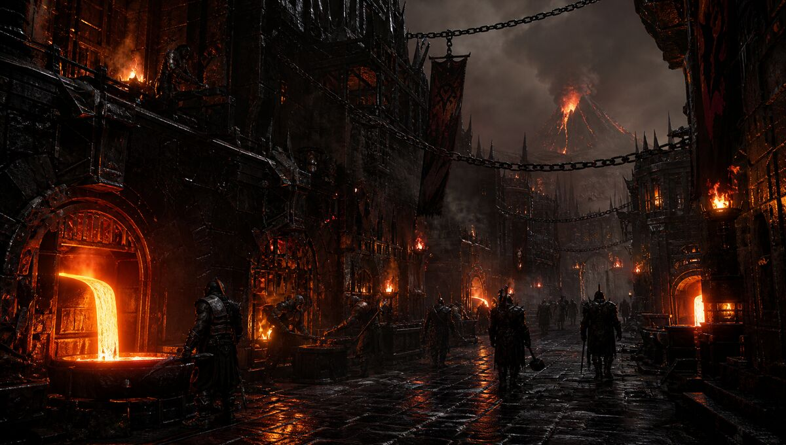
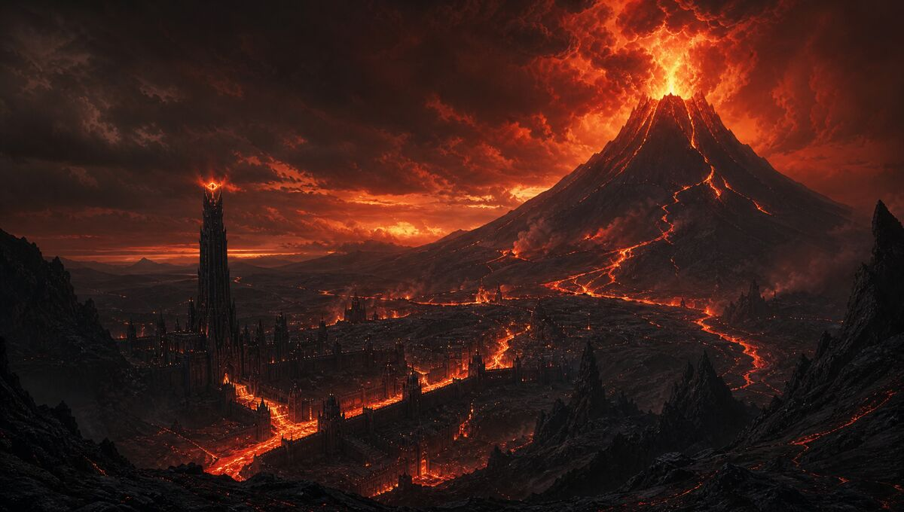
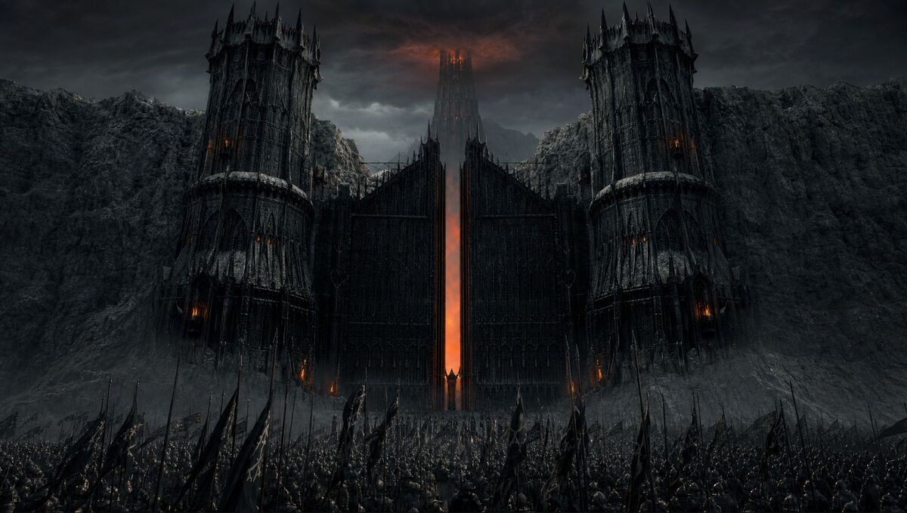
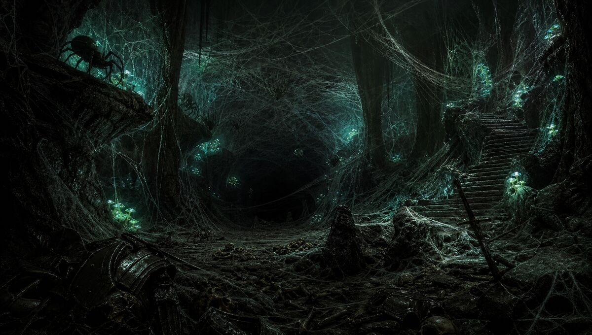
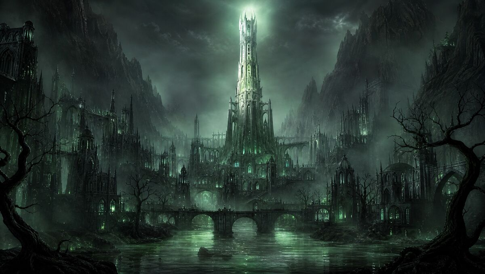

🔥 The Dark City — Aerial

⚒️ The Forges — Street Level

🌋 Mount Doom — The Furnace

🚪 The Black Gate — Morannon

🕷️ Shelob's Lair — The Caves

👻 Minas Morgul — Dead City
Where Yabroud Fell Into Shadow
One does not simply walk in
"Three Caves for the Artists under stone,
Seven Forges for the Smiths in halls of fire,
Nine Districts for Mortal Men doomed to build,
One Tower in the Land where Shadows lie.
One City to rule them all, One City to find them,
One City to bring them all, and in the darkness bind them
In the Land of Yabroud where the Shadows lie."





All power comes from the mountain. Geothermal, volcanic, molten — clean energy is for Elves. The city runs on what the earth bleeds.
3,500 years of Yabroud memory lives in the stone. Shelob guards it. The data centers never sleep. The wine still ages. The spider is patient.
420 forges, 420 masters. No two blades alike. Competition breeds excellence. The bazaar spirit of the Spice Quarter lives in iron now.
From the 66th floor of Barad-dûr, nothing moves unseen. The Architect watches. The city is the Architect. The Architect is the city.
Zero light pollution — by law. Stars are for navigation. Shadows are for ambush. Beauty exists in what you cannot see.
3-story limit. Rooftop gardens mandatory. Even Sauron cannot override urban planning. The building code is older than the Ring.